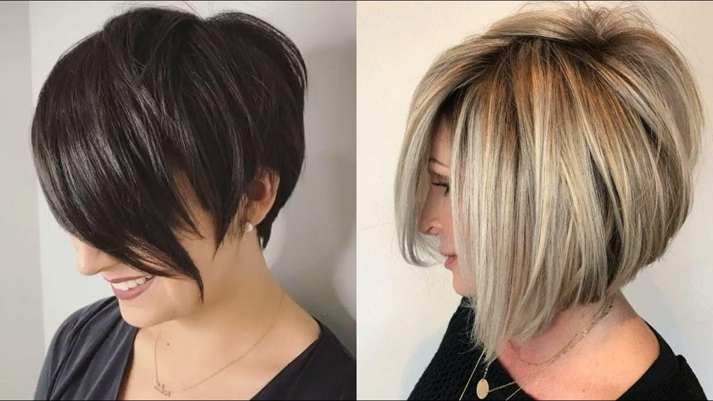
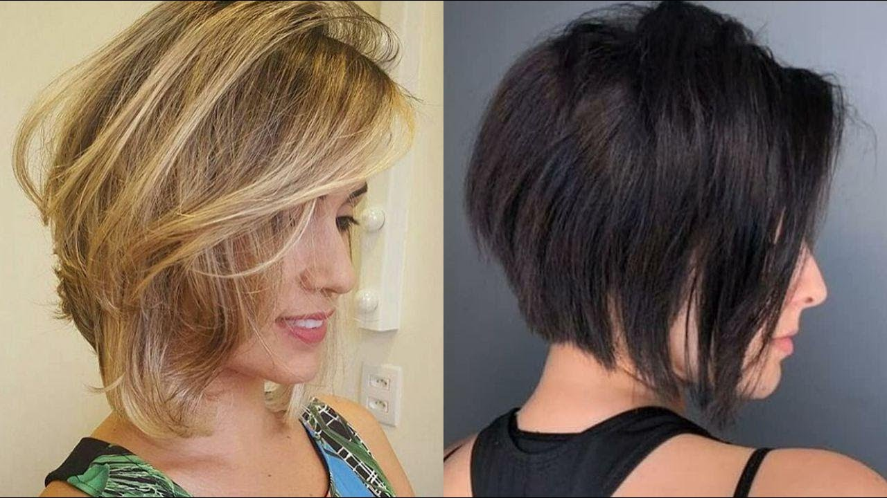
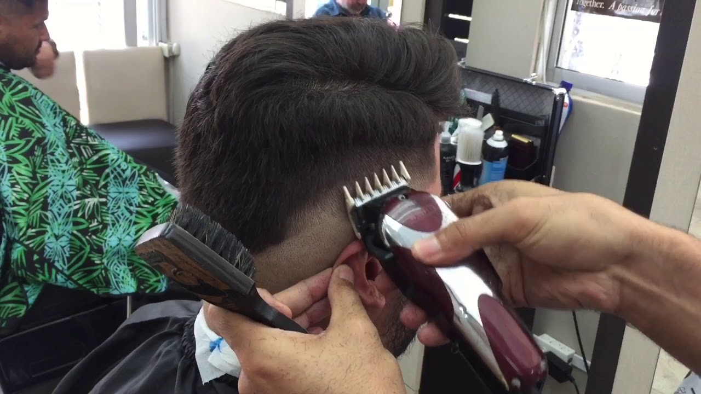
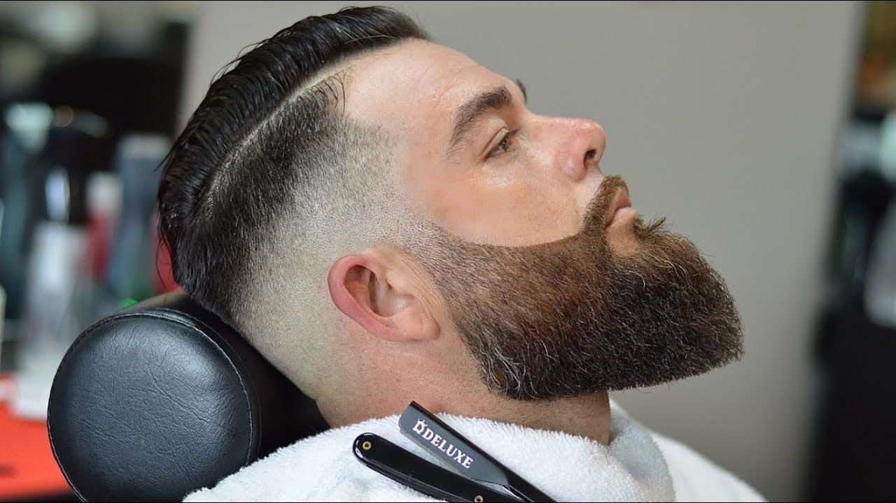

Se tomarán medidas de las facciones faciales y del tipo de peinado en base a esto de dará una lista de peinados que más le convenga al cliente dicha
lista solo será opcional el cliente puede decidir que estilo prefiere los productos usados son de calidad y de renombre.
Se realizan cortes de estética y de barberia el estilo no afectara el precio amenos de que el corte sea muy elaborado cortes de cabello como el degrafilado,
asimetrico, blunt bob, mullet, undercut, Corte fade, comb over, mohicano, etc… son cortes que por si mismos no son ni caros ni elaborados pero si a petición del cliente
quiere más modificaciones esto ya le generara un gasto adicional.
A continuación pueden verse algunos de los cortes que nuestros estilistas han echo como muestra de nuestra habilidad y calidad.




En caso de que no se pueda presentar a la cita o llegue a faltar por falta
de tiempo favor de reagendar en ese mismo instante en nuestra sucursal de ser posible.